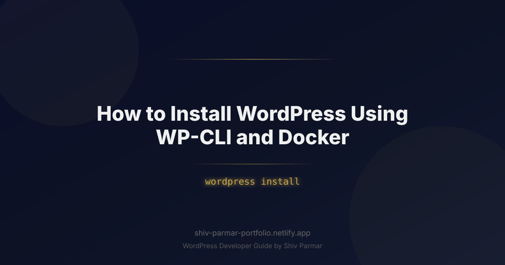

How to Install WordPress Using WP-CLI and Docker
Table of Contents
Setting up a modern web development environment demands speed, reproducibility, and isolation. For years, completing a standard wordpress install meant manually creating MySQL databases, configuring web servers, downloading zip files, and navigating web-based setup wizards. While that traditional approach works for simple site launches, it quickly becomes a bottleneck for developers, agencies, and DevOps engineers managing complex web projects.
By pairing Docker with WP-CLI (the official command-line interface for WordPress), you can replace tedious GUI installers with automated, containerized environments. Docker packages your database, web server, and PHP runtime into isolated, consistent environments that run identically across macOS, Linux, and Windows. WP-CLI then allows you to execute commands to install core files, configure database credentials, active themes, and manage plugins—all in a matter of seconds, directly from your terminal.
In this comprehensive WordPress guide, you will learn how to build a production-grade, containerized local environment using Docker Compose and automate your wordpress install workflow using WP-CLI. Whether you are bootstrapping a new agency template, building custom plugins, or setting up automated continuous integration pipelines, this guide delivers the exact code scripts, architecture patterns, and command workflows you need.
What is WordPress Installation via WP-CLI and Docker?
To understand why this tech stack has become standard practice, it helps to break down how these two powerful tools work together to modernize WordPress deployment.
Docker is an open-source containerization platform that allows developers to package applications and their dependencies into lightweight, isolated execution units called containers. Instead of installing PHP, Nginx/Apache, and MySQL directly onto your host computer (which often causes version conflicts between projects), Docker containers virtualize OS-level dependencies while sharing the host kernel. This guarantees that your environment functions identically in local development, testing staging servers, and live production deployments.
WP-CLI is the official command-line tool for managing WordPress installations. It provides a terminal interface for performing actions that traditionally required clicking through the admin dashboard or editing configuration files manually. With WP-CLI, tasks like downloading core files, creating the wp-config.php file, populating the database schema, generating admin credentials, and updating plugins can be executed via terminal scripts.
Combining these technologies creates a headless, containerized infrastructure where WP-CLI interacts directly with your Docker containers. You define your database and application layers inside a docker-compose.yml file, spin up the stack, and execute WP-CLI commands inside the application container to provision a site automatically.
| Feature / Dimension | Traditional GUI & Host Installation | Containerized Docker + WP-CLI Installation |
|---|---|---|
| Provisioning Speed | 10-15 minutes of manual UI clicks | Under 30 seconds via scripted execution |
| Environment Parity | High risk of "works on my machine" bugs | 100% identical container environments across OS platforms |
| System Cleanup | Leaves residual databases, PHP packages, server configs | Complete cleanup with a single container teardown command |
| Automation Capability | Limited; requires manual database import & admin wizard | Fully scriptable in CI/CD pipelines, Bash, or Ansible scripts |
| Dependency Isolation | Global PHP/Database versions shared across all local projects | Each project maintains isolated PHP, MySQL, and server versions |
Why WordPress Containerization and Automation Matter in 2026
The modern web development landscape has evolved significantly. Monolithic local environments (such as older traditional MAMP or XAMPP stacks) fail to meet modern DevOps and enterprise development standards. Today's high-performing engineering teams require automated workflows, high-security sandboxes, and cloud-native practices.
Infrastructure as Code (IaC) Integration
In modern workflows, software configuration should live in source control alongside application code. Defining your WordPress environment inside a docker-compose.yml file treats your local infrastructure as code. Teammates can clone your repository, run one terminal command, and immediately spin up an identical development environment without configuring local web servers or MySQL instances.
Decoupled Architectures and Headless WordPress
With the widespread adoption of headless architecture, GraphQL, and modern JavaScript frontend frameworks (Next.js, Nuxt, Astro), WordPress often serves purely as a backend content API. Developing headless sites requires spinning up backend CMS instances rapidly to test API endpoints. Docker and WP-CLI make it seamless to throw up disposable CMS instances, inject mock content via command-line scripts, run API tests, and tear down the infrastructure effortlessly.
Zero-Touch Continuous Integration (CI/CD) Pipelines
Modern continuous integration workflows demand automated testing environments. When developers open a pull request, CI workflows (such as GitHub Actions or GitLab CI) need to run unit tests, integration tests, and visual regression suites. Docker containers paired with WP-CLI allow automated systems to instantiate ephemeral WordPress sites, run automated testing suites, and return test results in seconds without human intervention.
Step-by-Step Guide to Installing WordPress with Docker and WP-CLI
Follow this step-by-step WordPress guide to construct a developer-ready environment from scratch. We will establish a structured project directory, write environment variables, construct a multi-container Docker Compose setup, and provision the application using WP-CLI commands.
Prerequisites and System Requirements
Before proceeding, ensure your computer has the following tools installed and running:
- Docker Engine & Docker Desktop (v20.10+ or equivalent on macOS, Linux, or Windows via WSL2)
- Docker Compose (v2.0+ integrated with Docker CLI)
- Terminal/CLI Access (Bash, Zsh, or PowerShell)
- Git (optional, for version control integration)
Step 1: Directory Setup and Environment Variables
First, open your terminal and create a dedicated project directory for your new containerized application. We will structure the root directory to hold our environment configurations, volume mounts, and Docker configurations.
mkdir wp-docker-automation
cd wp-docker-automation
mkdir -p html
Next, create a hidden environment file named .env in the project root. Storing database credentials in environment variables keeps sensitive data out of main configuration files and prevents credential leaks in version control repositories.
# .env file configuration
DB_NAME=wordpress_db
DB_USER=wp_user
DB_PASSWORD=SecurePassword123!
DB_ROOT_PASSWORD=RootSuperPassword123!
DB_HOST=db:3306
WP_URL=http://localhost:8000
WP_TITLE="Automated WordPress Install"
WP_ADMIN_USER=admin
WP_ADMIN_PASSWORD=ComplexAdminPassword2026!
WP_ADMIN_EMAIL=admin@example.com
Step 2: Crafting the Docker Compose Configuration
Create a docker-compose.yml file in your project root. This file defines three essential containers:
- db: A database container running MariaDB/MySQL.
- wordpress: The main web application container executing PHP-FPM / Apache.
- wpcli: A specialized container containing WP-CLI utilities configured to talk to the shared network and application files.
version: '3.8'
services:
db:
image: mariadb:10.11
container_name: wp_mariadb
restart: always
environment:
MYSQL_DATABASE: ${DB_NAME}
MYSQL_USER: ${DB_USER}
MYSQL_PASSWORD: ${DB_PASSWORD}
MYSQL_ROOT_PASSWORD: ${DB_ROOT_PASSWORD}
volumes:
- db_data:/var/lib/mysql
networks:
- wp_network
healthcheck:
test: ["CMD", "mysqladmin", "ping", "-h", "localhost", "-u", "root", "-p${DB_ROOT_PASSWORD}"]
interval: 5s
timeout: 5s
retries: 5
wordpress:
image: wordpress:latest
container_name: wp_app
restart: always
ports:
- "8000:80"
environment:
WORDPRESS_DB_HOST: ${DB_HOST}
WORDPRESS_DB_NAME: ${DB_NAME}
WORDPRESS_DB_USER: ${DB_USER}
WORDPRESS_DB_PASSWORD: ${DB_PASSWORD}
volumes:
- ./html:/var/www/html
networks:
- wp_network
depends_on:
db:
condition: service_healthy
wpcli:
image: wordpress:cli
container_name: wp_cli
restart: "no"
user: "33:33" # Matches www-data user/group inside official docker images
environment:
WORDPRESS_DB_HOST: ${DB_HOST}
WORDPRESS_DB_NAME: ${DB_NAME}
WORDPRESS_DB_USER: ${DB_USER}
WORDPRESS_DB_PASSWORD: ${DB_PASSWORD}
volumes:
- ./html:/var/www/html
networks:
- wp_network
depends_on:
db:
condition: service_healthy
wordpress:
condition: service_started
volumes:
db_data:
networks:
wp_network:
driver: bridge
Step 3: Launching the Docker Containers
With your docker compose file configured, launch the database and web server containers in detached mode (background execution) by running:
docker compose up -d db wordpress
You can check the status of your containers using the following command:
docker compose ps
Because we included a healthcheck block in the database definition, the wordpress container automatically waits until MariaDB is fully initialized and accepting connections before starting. This prevents common race conditions where the web app attempts to connect to a booting database.
Step 4: Executing the WordPress Install via WP-CLI
Now that your infrastructure containers are active, you can use the wpcli service container to run commands against your local file system and database without installing PHP or WP-CLI on your host computer.
First, verify that core files are present. The official wordpress image populates ./html on startup. If you prefer to download core files freshly using WP-CLI, run:
docker compose run --rm wpcli wp core download --force
Next, install the WordPress database tables, site configuration, and administrative credentials in a single automated step using the wp core install command:
docker compose run --rm wpcli wp core install \
--url="${WP_URL}" \
--title="${WP_TITLE}" \
--admin_user="${WP_ADMIN_USER}" \
--admin_password="${WP_ADMIN_PASSWORD}" \
--admin_email="${WP_ADMIN_EMAIL}" \
--skip-plugins
Upon execution, WP-CLI will connect to the database container, initialize schema tables, insert basic site configuration, and set up your admin user account. The command line output will confirm success:
Success: WordPress installed successfully.
Step 5: Post-Installation CLI Automation
The real efficiency of combining WP-CLI with Docker comes after core installation. You can automate permalink updates, plugin installations, theme activations, and cleanup tasks instantly via command line.
Execute the following multi-command sequence to configure standard permalinks, clean up default sample plugins, install active extensions, and set up your active theme:
# 1. Update permalink structure to SEO-friendly post names
docker compose run --rm wpcli wp rewrite structure '/%postname%/' --hard
# 2. Delete default sample plugins (Hello Dolly & Akismet)
docker compose run --rm wpcli wp plugin delete hello akismet
# 3. Install and activate standard operational plugins in bulk
docker compose run --rm wpcli wp plugin install query-monitor redis-cache seo-by-rank-math --activate
# 4. Install and activate a default modern theme
docker compose run --rm wpcli wp theme install twentytwentyfour --activate
# 5. Create basic page structure automatically
docker compose run --rm wpcli wp post create --post_type=page --post_title='Home' --post_status='publish'
docker compose run --rm wpcli wp post create --post_type=page --post_title='Blog' --post_status='publish'
Step 6: Verifying Installation and Web Access
Open your browser and navigate to http://localhost:8000. You will see your newly generated site running on modern container infrastructure without navigating through a single installation wizard.
To access the site dashboard, navigate to http://localhost:8000/wp-admin and log in using the administrative parameters defined in your .env file:
- Username:
admin - Password:
ComplexAdminPassword2026!
Step 7: Scripting the Complete Workflow
To fully utilize this workflow, combine these commands into a single executable shell script named setup.sh in your root directory:
#!/usr/bin/env bash
set -e
echo "🚀 Starting Docker Infrastructure..."
docker compose up -d db wordpress
echo "⏳ Waiting for database and service initialization..."
docker compose run --rm wpcli wp core is-installed || true
echo "⚡ Provisioning WordPress via WP-CLI..."
docker compose run --rm wpcli wp core install \
--url="http://localhost:8000" \
--title="Automated Instance" \
--admin_user="admin" \
--admin_password="ComplexAdminPassword2026!" \
--admin_email="dev@example.com"
echo "⚙️ Configuring settings, permalinks, and essential plugins..."
docker compose run --rm wpcli wp rewrite structure '/%postname%/'
docker compose run --rm wpcli wp plugin install query-monitor --activate
echo "✅ Success! Site ready at http://localhost:8000"
Make the script executable and run it whenever you need a clean environment:
chmod +x setup.sh
./setup.sh
Best Practices for WordPress Containerization and WP-CLI
Implementing Docker and WP-CLI in professional environments requires adhering to infrastructure standards around permissions, security, custom environments, and persistent data handling.
1. Manage File System Permissions Correctly
A common friction point in containerized web development is file permission mismatches between your host machine user and the web server container user. The official WordPress container runs Apache/PHP as the www-data user (typically UID 33 and GID 33).
Ensure that WP-CLI commands create files with matching owner permissions by explicitly invoking the user: "33:33" directive in your docker-compose.yml file. If host ownership issues occur on Linux machines, set permissions using host system commands:
sudo chown -R $USER:www-data html/
chmod -R 775 html/
2. Decouple Database Operations with WP-CLI Exports
Never rely solely on container persistence for database state during active development. Use WP-CLI to capture regular database snapshots into version-controlled baseline files. This permits rapid rolling back of schema changes or plugin testing artifacts.
# Export database state to a local SQL file
docker compose run --rm wpcli wp db export data-backup.sql
# Import database state from an existing SQL snapshot
docker compose run --rm wpcli wp db import data-backup.sql
3. Use Dynamic Database Hostnames for WP-CLI
Inside a Docker network, containers communicate using service names as hostname aliases rather than 127.0.0.1 or localhost. Ensure that your wp-config.php file points to the defined database service name (e.g., db:3306). Using localhost inside a container tells PHP to search for a local Unix socket on that specific container, causing connection failures.
4. Keep Sensitive Environment Variables Out of Version Control
Always add your .env file, local upload directories, and SQL dumps to your project's .gitignore file. Keep a sanitized .env.example template in source control so incoming team members can fill in local values easily.
# .gitignore configuration
.env
html/wp-content/uploads/
*.sql
*.tar.gz
Common Mistakes to Avoid
Avoid these critical setup errors when configuring your containerized application and CLI routines.
Executing WP-CLI as the Root User
Running WP-CLI commands as the container root user (root) changes file ownership inside mounted volumes to `root`. Consequently, the standard PHP runtime (running as `www-data`) will fail to edit, rewrite, or update those plugin or core files, triggering mysterious file permission errors in the admin dashboard.
Fix: Always pass user: "33:33" in Docker Compose or invoke --allow-root only when running isolated diagnostic operations.
Ignoring Database Initialization Dependencies
Starting application containers before the database engine completes its internal startup phase causes immediate database connection errors. MySQL and MariaDB initialize schema indexes and temp files on initial build, which takes several seconds longer than HTTP web server startup times.
Fix: Implement explicit health checks (healthcheck) in your `db` service block and specify depends_on: { db: { condition: service_healthy } } in your web application services.
Hardcoding Domain Names in Stored Databases
WordPress stores absolute URLs inside its database records (including options, post content, and metadata). Hardcoding domain references inside custom scripts without site migration adjustments will cause broken assets and redirection loops when transferring site databases from containerized local stacks to remote production servers.
Fix: Leverage WP-CLI search-and-replace routines whenever migrating containerized databases across staging environments:
docker compose run --rm wpcli wp search-replace 'http://localhost:8000' 'https://staging.example.com' --precise --all-tables
Neglecting Persistent Volumes for Uploads and Databases
Containers are ephemeral by design. Destroying a container (docker compose down) permanently deletes all file modifications unless those file paths are backed up by host directory mounts or named Docker volumes.
Fix: Verify that both /var/lib/mysql inside your database container and your project's /var/www/html directory inside your web container are tied to persistent volumes in your Compose architecture.
Conclusion
Mastering a dockerized wordpress install workflow using WP-CLI gives developers complete control over their environment while keeping setup times to a minimum. By following this step-by-step WordPress guide, you have learned how to containerize your stack, manage databases effortlessly, and execute command-line instructions to automate routine tasks without touching a traditional graphical user interface.
This modern approach to WordPress development ensures absolute consistency across different environments, eliminating configuration mismatches and drastically accelerating your development pipeline. Whether you are building custom themes, developing complex plugins, or managing enterprise-grade applications, combining Docker and WP-CLI is a game-changer for developer efficiency, security, and scalability.
If you need expert assistance optimizing your technical architecture, building custom web solutions, or streamlining your development workflow, Shiv Parmar is available for custom WordPress development work worldwide. Reach out today to discuss your project requirements and elevate your web application to the next level.